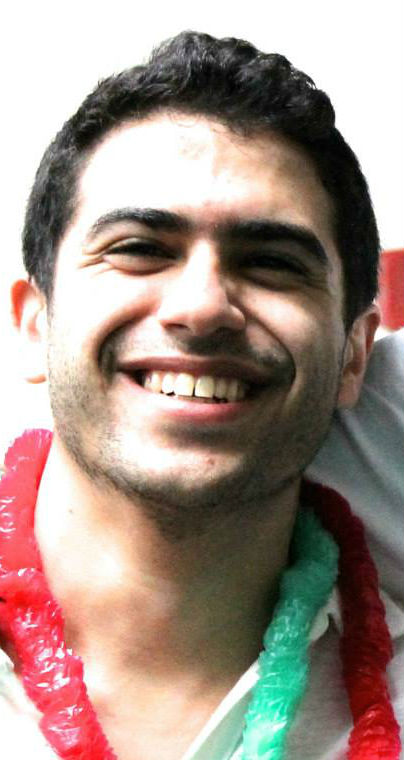
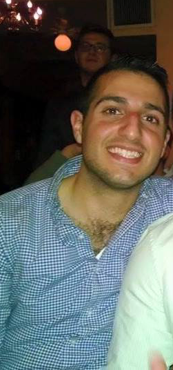

Josh Aharonoff
Director of Marketing

Emanuel Aharonoff
Director of Sales and Support
Nati Aharonoff
Director of Operations

Joe Piroozian
Director of Construction
From Left to Right: Josh Aharonoff, Emanuel Aharonoff, Nati Aharonoff
GoSukkah is dedicated to provide the people of Am Yisrael (Nation of Israel) with a protective temporary dwelling place, The Sukkah, in order to experience the joyous festival of Sukkot . Just as G-d protected our forefathers for 40 years in the wilderness under Sukkot, GoSukkah promises to craft dwellings that will protect Am Yisrael under Sukkot.
Along with the service of constructing durable kosher Sukkot, GoSukkah also offers various holiday related items for purchase.
Unlike traditional Sukkah builders, GoSukkah provides extraordinary convenience, quality experience and fine customer service. Our mission is to make the people of Am Yisrael our trusted partners this holiday season.
Director of Marketing
Director of Sales and Support
Director of Operations
Director of Construction
GoSukkah is a growing team, along with new customers signing up every year. As a privately owned, founder-led company, we are able to work fast and respond to our customers’ needs without anything getting in our way.
GoSukkah is proud of its roots. Started by 3 Yeshiva boys in High School Nati Aharonoff, Joe Piroozian, and Isaac Yehoshua- GoSukkah now employs over 15 Yeshiva University students- who are all dedicated to Torah, Mitzvot and of course building kosher, beautiful Sukkot!
We feel that all of Am Israel should have the opportunity to spend the holiday with joy. To do our part in making this a reality, we donate 10% of all profit to Tomchei Shabbos , a non-profit organization dedicated to providing Shabbat and Holiday meals to countless Jews in need.